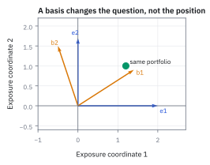
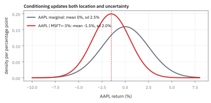
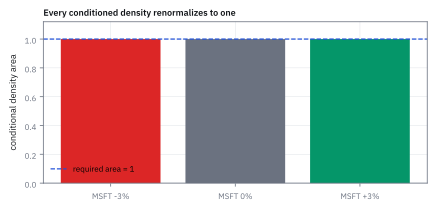

6.3 Conditional Distributions
เมื่อได้ข้อมูลใหม่มาอยู่ในมือ ปรับการคาดการณ์สินทรัพย์ที่เหลืออย่างไรให้แม่นยำ
นักวิ่งสองคนใช้ลู่วิ่งเดียวกัน ถ้าเห็นคนหนึ่งลื่นจนช้ากว่าปกติ 3 นาที คุณยังทายเวลาอีกคนด้วยค่าเฉลี่ยวันแดดได้ไหม?
เฉลย: ไม่ได้ พื้นลื่นทำให้ทั้งคู่ช้าลงพร้อมกัน การที่คนแรกช้า 3 นาทีจึงเป็นข่าวว่าวันนี้พื้นลื่น คำทายของคนที่สองต้องขยับตาม ทั้งที่ยังไม่เห็นเขาวิ่ง หุ้นสองตัวในตลาดเดียวกันก็เหมือนกัน ขั้นที่ 2 จะแสดงว่าพอรู้ว่า MSFT ลง ค่าเฉลี่ยของ AAPL ขยับจาก +0.2% เป็น −0.5%
Conditional distribution คือ distribution ของผลลัพธ์หนึ่งหลังรู้ข้อมูลของอีกผลลัพธ์ ใช้ปรับความน่าจะเป็นให้ตรงกับเงื่อนไขที่เกิดขึ้นแล้ว
ศัพท์ที่ใช้ในหัวข้อนี้
- conditional distribution
- conditional distribution คือรูปแบบโอกาสของ Random Variable หนึ่งเมื่อทราบอีกตัวแล้ว ใช้ปรับการคาดการณ์เมื่อได้สัญญาณใหม่
- conditional probability density function (PDF)
- conditional density function คำนวณจากแผ่นตัดของ joint PDF หารด้วย marginal PDF เพื่อให้พื้นที่ใต้กราฟรวมเป็น 1
- conditional cumulative distribution function (CDF)
- conditional CDF บอก cumulative probability ภายใต้เงื่อนไข ใช้คำนวณโอกาสเหตุการณ์รุนแรงหลังได้ข้อมูลใหม่
- joint PDF
- joint density คือความสูงของโอกาสที่ตัวแปรทั้งสองเกิดร่วมกัน ใช้เป็นตัวตั้งก่อนปรับสเกล
- marginal PDF
- density ของตัวแปรที่ทราบค่าแล้ว ซึ่งทำหน้าที่เป็นตัวหาร (denominator) เพื่อปรับสเกลความน่าจะเป็นให้สมบูรณ์
- AAPL (Apple Inc.)
- หุ้นบริษัท Apple ในตลาดสหรัฐฯ ใช้แทนตัวแปรผลตอบแทนที่ต้องการปรับการคาดการณ์ ($X$)
- MSFT (Microsoft Corp.)
- หุ้นบริษัท Microsoft ในตลาดสหรัฐฯ ใช้แทนผลตอบแทนที่สังเกตเห็นแล้วในสนามจริง ($Y$)
- conditional density
- ใช้บอก density ของตัวแปรหนึ่งเมื่อรู้ค่าของอีกตัว ได้จากการหาร joint density ด้วย marginal ของตัวที่รู้แล้ว ขอบเขตที่เหลือต้องอ่านจากเงื่อนไขของผืน density
- regression function
- ค่าเฉลี่ยของตัวแปรหนึ่งในรูป function ของอีกตัว คือ $E[X\mid Y=y]$ ไม่ใช่ตัวเลขคงที่ แต่เป็นเส้นที่ใช้บอกว่าพอรู้ข้อมูลแล้วควรคาดหวังเท่าไร
สัญลักษณ์ที่ใช้ในหัวข้อนี้
| สัญลักษณ์ | ความหมาย | หน่วย |
|---|---|---|
| $X,Y$ | daily return ของ AAPL และ MSFT ในรูปทศนิยม | decimal return/day |
| $f_{X\mid Y}(x\mid y)$ | conditional PDF ของ AAPL เมื่อทราบว่า MSFT มีผลตอบแทน $y$ | 1/return |
| $f_{X,Y}(x,y)$ | joint PDF ที่จุด $(x,y)$ | 1/(return²) |
| $f_Y(y)$ | marginal PDF ของตัวแปรเงื่อนไขที่จุด $y$ | 1/return |
| $u$ | ตัวแปรหุ่นสำหรับอินทิเกรตผลตอบแทนของ AAPL | decimal return/day |
| $y$ | ค่าผลตอบแทนของ MSFT ที่สังเกตเห็นแล้ว | decimal return/day |
ที่มาที่ไป: ข้อมูลใหม่มาถึงกลางวัน แล้วยังไงต่อ
สถานการณ์ที่ทำให้เครื่องมือนี้จำเป็นเกิดขึ้นทุกวันบนโต๊ะ คือตลาดเปิดมาแล้วดัชนีร่วง 3% คำถามทันทีคือของที่เราถืออยู่ควรเป็นเท่าไร
ก่อนมีเครื่องมือนี้ คนตอบด้วยประสบการณ์และความรู้สึก ซึ่งใช้ได้จนกระทั่งพอร์ตใหญ่เกินกว่าจะรู้สึกไหว
สิ่งที่หัวข้อนี้ให้คือวิธีคำนวณคำตอบนั้นออกมาเป็นตัวเลข โดยการตัดผิวสองมิติออกมาเป็นแผ่นเดียว ตรงค่าที่เรารู้แล้ว
แต่แผ่นที่ตัดออกมายังใช้ไม่ได้ทันที เพราะพื้นที่ใต้มันไม่เท่ากับหนึ่ง ต้องปรับสเกลก่อน และการปรับสเกลนั้นเองคือหัวใจของทั้งหัวข้อ
คำถามที่เรากำลังตอบ: ข้อมูลใหม่ที่เพิ่งเข้ามาเปลี่ยนมุมมองความเสี่ยงอย่างไร?
เมื่อเราเฝ้าดูตลาดและพบว่า MSFT ($Y$) มีผลตอบแทนลดลง $y = -3\%$ ข้อมูลนี้ทำให้เราไม่สามารถใช้ marginal distribution เดิมของ AAPL ($X$) ได้อีกต่อไป เราจำเป็นต้องสร้าง distribution แบบมีเงื่อนไขที่ผนวกข้อมูลใหม่เข้าไป โดยยังคงรักษาโครงสร้างความสัมพันธ์ร่วมเดิมเอาไว้
ภูมิหลังทางประวัติศาสตร์: จากแนวคิดของ Bayes สู่การปรับมุมมองความเสี่ยง
แนวคิดความน่าจะเป็นมีเงื่อนไขเริ่มต้นจาก Thomas Bayes ในทศวรรษ 1760 และได้รับการขยายต่อโดย Pierre-Simon Laplace ในปี 1774 โดยตั้งคำถามว่า เมื่อสังเกตเห็นผลลัพธ์บางอย่างเกิดขึ้นแล้ว ความเชื่อมั่นต่อสาเหตุเดิมควรเปลี่ยนไปอย่างไร
สำหรับค่าต่อเนื่องมีปัญหาหนึ่งข้อ: โอกาสที่ MSFT จะลง −3.000% พอดีเป็นศูนย์ตามหัวข้อ 1.8 จึงหารด้วยโอกาสของจุดตรง ๆ ไม่ได้ ทางออกคือหารด้วย density แทน ซึ่งขั้นที่ 3 ทำ และปี 1933 Kolmogorov ทำให้วิธีนี้ใช้ได้อย่างรัดกุม
ในตลาดการเงิน โต๊ะเทรดไม่ได้อยู่ในโลกที่มีแต่ข้อมูลตั้งต้น เมื่อตัวเลขเงินเฟ้อหรือผลประกอบการประกาศออกมา distribution เดิมจะถูกอัปเดตทันทีเป็น conditional distribution เพื่อคำนวณการปรับพอร์ตและการทำ hedging ให้สะท้อนสถานการณ์จริง
ตารางร่วมหกช่องจากหัวข้อ 6.2
| $X$ (AAPL) ลง \ $Y$ (MSFT) → | up | down | รวมแถว = marginal ของ $X$ |
|---|---|---|---|
| $-2\%$ | 0.05 | 0.15 | 0.20 |
| $0\%$ | 0.30 | 0.20 | 0.50 |
| $+2\%$ | 0.25 | 0.05 | 0.30 |
| รวมคอลัมน์ = marginal ของ $Y$ | 0.60 | 0.40 | 1.00 |
คราวนี้เราจะ *ตัด* ตารางเป็นคอลัมน์เดียว แล้วปรับสเกลให้รวมได้ 1
ขั้นที่ 1 — ตัดคอลัมน์ “down” ออกมา แล้วหารด้วยขนาดของมัน
ยังไม่ต้อง integral: ถ้ารู้แล้วว่าวันนี้ MSFT ลง เราสนใจแค่คอลัมน์ down ของตาราง แต่คอลัมน์นั้นรวมไม่ได้ 1
คอลัมน์ down มีสามช่อง 0.15, 0.20, 0.05 รวมได้ 0.40 ซึ่งไม่ใช่ 1 เพราะมันคือแค่ 40% ของวันทั้งหมด พอหารทุกช่องด้วย 0.40 ผลรวมกลับเป็น 1 นี่คือการ “ปรับสเกลแผ่นตัด” ในสูตรข้างล่าง
เทียบกับตอนยังไม่รู้อะไร: โอกาสที่ AAPL ลง 2% เพิ่มจาก 0.20 เป็น 0.375 เกือบสองเท่า ข่าวว่า MSFT ลงเปลี่ยนคำทายจริง
ขั้นที่ 2 — ค่าเฉลี่ยใหม่หลังรู้ข่าว เทียบกับค่าเฉลี่ยเดิม
พอมี distribution ใหม่แล้ว ค่าเฉลี่ยใหม่ก็คำนวณแบบหัวข้อ 1.3 ได้ทันที ค่า × น้ำหนัก แล้วรวม
ค่าเฉลี่ยของ AAPL ในวันที่ MSFT ลง คือ $-0.5\%$ ขณะที่ค่าเฉลี่ยรวมทุกวันคือ $+0.2\%$ ข่าวหนึ่งชิ้นเลื่อนคำทายไป 0.7 จุด นี่คือสิ่งที่ conditional expectation ในขั้นที่ 5 ทำในกรณีต่อเนื่อง
แปลว่าอะไร: ถ้ามีคนบอกแค่ว่า “MSFT แดง” คำทาย AAPL ที่ถูกไม่ใช่ $+0.2\%$ อีกต่อไป
ขั้นที่ 3 — ปรับสเกลแผ่นตัดด้วยกฎของเบย์สในรูป density
ที่มาของสูตร conditional density จากการบีบแถบความน่าจะเป็นแคบ ๆ เข้าสู่ศูนย์ จนได้แผ่นตัดสองมิติที่ปรับสเกลด้วย marginal density
สำหรับตัวแปรต่อเนื่อง ความน่าจะเป็นที่จุดเดี่ยว $P(Y=y)$ เท่ากับศูนย์เสมอ จึงต้องเริ่มจากแถบแคบ ๆ ความกว้าง $\Delta y$ แล้วใช้กฎความน่าจะเป็นมีเงื่อนไขพื้นฐาน
เมื่อหารทั้งเศษและหารด้วย $\Delta y$ แล้วส่งความกว้างเข้าสู่ศูนย์ เทอมส่วนจะลู่เข้าหา marginal density $f_Y(y)$ ขณะที่ตัวเศษจะกลายเป็น integral ของ joint density ตามแนวตัด
เมื่อหา derivative เทียบกับ $x$ เพื่อดึง density ออกมาจาก CDF จะได้สูตรแผ่นตัดหารด้วยตัวปรับสเกลตรง ๆ โดยมีเงื่อนไขว่าตัวหารต้องมากกว่าศูนย์
ขั้นที่ 4 — นิยามของ conditional CDF: สะสมแผ่นที่ปรับสเกลแล้ว
เมื่อได้แผ่นที่ปรับสเกลแล้วในขั้นก่อนหน้า การสะสมก็ใช้ นิยาม เดียวกับกรณีตัวเดียว สิ่งเดียวที่ต่างคือ $y$ ถูกตรึงไว้ตลอดทาง ไม่ได้ถูกรวมทิ้ง
สะสม conditional PDF ของ AAPL จากลบอนันต์จนถึง threshold $x$ โดยตรึงค่าของ $Y$ ไว้ที่ $y$ จะได้ค่าความน่าจะเป็นจริงแบบมีเงื่อนไขที่เป็นตัวเลขไร้หน่วยระหว่าง 0 ถึง 1
ขั้นที่ 5 — นิยามของ conditional expectation: ค่าเฉลี่ยใหม่หลังรู้ข้อมูล
บรรทัดนี้คือ นิยาม ของ conditional expectation หน้าตาเหมือนค่าเฉลี่ยธรรมดาทุกอย่าง ต่างกันที่น้ำหนักเปลี่ยนจาก density เดิมเป็น conditional density นี่คือสิ่งที่ใช้จริงที่สุด คือพอรู้ตัวหนึ่งแล้ว คาดว่าอีกตัวจะเป็นเท่าไร
คูณผลลัพธ์ที่เป็นไปได้ $u$ ด้วย conditional density แล้วอินทิเกรตตลอดทั้งแกน จะได้ expected value ใหม่ของ AAPL ที่ปรับตามผลตอบแทน $y$ ของ MSFT มีหน่วยเป็น decimal return ต่อวัน
ขั้นที่ 6 — ตรวจสอบว่าพื้นที่ density ใหม่รวมได้หนึ่งเสมอ
ตรวจว่าการหารด้วยตัวปรับสเกลทำงานถูกต้อง ทำให้พื้นที่รวมใต้กราฟ conditional density กลับมาเป็นหนึ่งเสมอ
ดึงตัวหาร $f_Y(y)$ ออกมานอกเครื่องหมาย integral ได้เพราะตลอดการคำนวณนี้เราตรึงค่า $y$ ไว้คงที่
เทอม integral ที่เหลืออยู่คือการรวม joint density ตลอดทั้งแกน $x$ ซึ่งตามนิยามก็คือ marginal density $f_Y(y)$ ของตัวแปรเงื่อนไขนั่นเอง
เศษกับส่วนตัดกันเหลือ $1.00$ พอดี ยืนยันว่าแผ่นตัดที่ถูกปรับสเกลแล้วมีคุณสมบัติของ probability density ที่ถูกต้องสมบูรณ์
ขั้นที่ 7 — กฎของ Bayes และการปรับเงื่อนไขระดับกลุ่มตัวแปร (vector partition)
นี่คือสูตรที่ใช้ปรับมุมมองความเสี่ยงของพอร์ต เมื่อตลาดสังเกตเห็นราคาของกลุ่มสินทรัพย์นำตลาด $X_1$ แล้วต้องการประเมินกลุ่มสินทรัพย์ตาม $X_2$
กฎของ Bayes ในรูปต่อเนื่องแสดงว่า เราสามารถสลับบทบาทระหว่างตัวสังเกตและตัวเป้าหมายได้ โดยคูณด้วย prior density แล้วหารด้วย marginal density
เมื่อระบบขยายเป็น vector ขนาด $n$ มิติ และแบ่งเป็นสองกลุ่ม $X_1$ และ $X_2$ การหา conditional density ของกลุ่มหลังเมื่อรู้ค่ากลุ่มแรกก็ยังใช้โครงสร้างเดิม
conditional CDF ได้จากการสะสม density ภายใต้เงื่อนไขผ่าน integral ซ้อนกัน $n-k$ มิติตามจำนวนตัวแปรในกลุ่มที่สอง
ขั้นที่ 8 — ตัวอย่างต่อเนื่อง: conditional density ของผืน density สามเหลี่ยม
ผืน density ก้อนเดียวกับหัวข้อ 6.2 ใช้ต่อได้ทันที เพราะ conditional density คือการเอาค่าที่จุดหนึ่ง หารด้วย marginal ของตัวที่รู้แล้ว
ผลที่ออกมามีความหมายตรง ๆ: เมื่อรู้ว่า $Y$ เท่ากับค่าใด ค่าที่เป็นไปได้ของ $X$ จะเหลือเป็นช่วงที่สั้นลง และกระจายสม่ำเสมอตลอดช่วงนั้น
ตัวหาร $f_Y(y)$ คือ marginal ที่คำนวณไว้แล้วในหัวข้อ 6.2 สิ่งที่ต้องระวังคือขอบเขต: พอรู้ว่า $Y=y$ แล้ว $X$ ต้องไม่ต่ำกว่า $y$ ตามเงื่อนไขของผืน density ขอบเขตจึงเริ่มที่ $y$ ไม่ใช่ที่ศูนย์
ตรวจว่าผลหารเป็น density จริงด้วยการอินทิเกรตตลอดช่วงที่เป็นไปได้ ได้หนึ่งพอดี การตรวจนี้สำคัญเพราะการหารด้วย marginal อาจทำให้พื้นที่รวมไม่เป็นหนึ่งได้ถ้าตั้งขอบเขตผิด
อ่านผลลัพธ์: conditional distribution คือ uniform บนช่วงจาก $y$ ถึง $1$ ยิ่ง $y$ สูง ช่วงยิ่งสั้น แปลว่ายิ่งรู้มาก ความไม่แน่นอนของ $X$ ยิ่งลดลง ซึ่งเป็นสิ่งที่เราคาดหวังและจะเห็นเป็นตัวเลขในขั้นถัดไป
ขั้นที่ 9 — conditional mean เป็น function ของ y และการตรวจ tower property
conditional mean ออกมาเป็นสูตรที่ยังติด $y$ อยู่ ซึ่งไม่ใช่ความผิดพลาด แต่นี่คือคำตอบจริง: ค่าเฉลี่ยใหม่ขึ้นกับว่าเราเห็นค่าอะไร
เมื่อเอาสูตรนี้ไปเฉลี่ยทับ $Y$ ด้วย marginal ของมันเอง จะได้ค่าเฉลี่ยเดิมกลับคืนมา นี่คือ tower property ที่หัวข้อ 2.1 พิสูจน์ไว้ และที่นี่ตรวจด้วยเลข
อินทิเกรต $x$ คูณ conditional density ตามช่วงที่เหลืออยู่ ตัวส่วนตัดกับตัวเศษได้ผลสวยคือ $(1+y)/2$ ซึ่งเป็นเส้นตรงใน $y$ ไม่ใช่ตัวเลขคงที่
สูตร $(1+y)/2$ เรียกว่า regression function คือค่าที่เราคาดว่าจะได้ของ $X$ เมื่อรู้ $Y$ แล้ว ถ้า $y$ เข้าใกล้ศูนย์ ความคาดหวังเข้าใกล้ครึ่งหนึ่ง ถ้า $y$ เข้าใกล้หนึ่ง ความคาดหวังเข้าใกล้หนึ่ง แปลว่ารู้มากแล้วเดาถูกขึ้น
บรรทัดสุดท้ายคือการตรวจ tower property: เอา $(1+Y)/2$ ไปหาค่าเฉลี่ย ได้ $2/3$ เท่ากับค่าเฉลี่ยที่คำนวณตรง ๆ จาก marginal ของ $X$ ในหัวข้อ 6.2 พอดี
ทำไมเรื่องนี้สำคัญ: นี่คือเหตุผลที่การเดาสองชั้นไม่ให้คำตอบที่ดีขึ้นหรือแย่ลงกว่าการเดาชั้นเดียว ถ้าค่าเฉลี่ยของการเดาไม่เท่ากับค่าเฉลี่ยจริง แปลว่าคำนวณ conditional ผิดที่ใดที่หนึ่ง
ขั้นที่ 10 — ตรวจ Law of Total Variance ด้วยเลขชุดเดียวกัน
หัวข้อ 2.2 บอกว่า variance แยกได้เป็นสองก้อน: ก้อนที่อธิบายได้ด้วยข้อมูลที่รู้ กับก้อนที่ยังเหลืออยู่แม้รู้แล้ว ที่นี่แทนเลขลงไปทั้งสองก้อน
ถ้าแนวคิดถูก สองก้อนต้องบวกกันได้ variance รวมพอดี และตัวเลขข้างล่างยืนยันว่าได้
variance รวมคำนวณจาก marginal ของ $X$ ได้หนึ่งส่วนสิบแปด ส่วน conditional variance ของ uniform บนช่วงยาว $1-y$ คือกำลังสองของความยาวหารสิบสอง จึงเหลือรูป $(1-y)^2/12$
แยกเป็นสองก้อน: ก้อนแรกคือ variance ของ regression function ได้หนึ่งส่วนเจ็ดสิบสอง ก้อนที่สองคือค่าเฉลี่ยของ conditional variance ได้หนึ่งส่วนยี่สิบสี่
สองก้อนบวกกันได้สี่ส่วนเจ็ดสิบสอง ซึ่งย่อเป็นหนึ่งส่วนสิบแปด เท่ากับ variance รวมพอดี การที่ตัวเลขลงตัวเช่นนี้ไม่ใช่เรื่องบังเอิญ แต่เป็นเพราะ Law of Total Variance เป็นจริงเสมอ ถ้าคำตอบไม่ตรง ให้กลับไปตรวจขอบเขตการอินทิเกรตก่อนสงสัยสูตร
แปลว่าอะไรในงานจริง: ก้อนแรกคือความเสี่ยงที่ข้อมูลของ $Y$ อธิบายได้ ส่วนก้อนที่สองคือความเสี่ยงที่ยังเหลือ แม้รู้ $Y$ แล้ว การอ่านสองก้อนนี้คือวิธีบอกว่าตัวแปรที่เราวัดไปนั้นช่วยลดความเสี่ยงได้จริงเท่าไร
แล้วเอาไปใช้ทำอะไรได้จริงบ้าง
การอัปเดตความคาดหวังเมื่อรู้ข้อมูลใหม่ คือสิ่งที่โต๊ะทำทุกครั้งที่ราคาขยับ
ใช้สร้าง hedge เพราะการรู้ว่าตัวหนึ่งขยับแล้วอีกตัวควรขยับเท่าไร คืออัตรา hedge พอดี ซึ่งเราจะทำเป็นตัวเลขจริงในหัวข้อ 7.4
ใช้ประเมินความเสี่ยงที่เหลือหลัง hedge แล้ว ซึ่งคือความไม่แน่นอนที่ยังค้างอยู่แม้รู้ข้อมูลแล้ว
ใช้ในการเทรดคู่ เพราะบอกว่าเมื่อตัวหนึ่งวิ่งไปแล้ว อีกตัวควรอยู่ตรงไหนถึงจะเรียกว่าผิดปกติ
Figure 6.3a — แผ่นตัดของ joint PDF เมื่อทราบค่า MSFT

เมื่อล็อกว่า MSFT ลง $-3\%$ เราจะได้แผ่นตัดตามแกน AAPL และเมื่อหารด้วย $f_Y(-3\%)$ กราฟจะถูกปรับสเกลจนมีพื้นที่ใต้เส้นเท่ากับ 1 กลายเป็น conditional PDF ที่พร้อมใช้งาน
Figure 6.3b — เปรียบเทียบ distribution ก่อนและหลังได้รับข้อมูล

เมื่อสังเกตว่า MSFT ติดลบ 3% ค่าเฉลี่ยของ AAPL จะถูกดึงจาก 0% ลงมาที่ -1.5% และความไม่แน่นอน (standard deviation) ก็ลดลงจาก 2.5% เหลือ 2.0% สะท้อนว่าข้อมูลช่วยลดความไม่แน่นอนลง
Figure 6.3c — การเปลี่ยนสัญญาณเป็นค่าคาดการณ์ (conditional mean)

ในตัวแบบเชิงเส้น conditional mean $E[X\mid Y=y] = 0.5y$ จะขยับเป็นเส้นตรงตามสัญญาณที่ได้รับ หาก MSFT เป็น $-3\%$ expected value ของ AAPL จะเลื่อนไปอยู่ที่ $-1.5\%$ ทันที
Figure 6.3d — ตรวจสอบพื้นที่ใต้กราฟ density มีเงื่อนไข

ไม่ว่าผลตอบแทนของ MSFT จะออกมาเป็น $-3\%$, $0\%$ หรือ $+3\%$ พื้นที่ใต้กราฟ conditional PDF ของ AAPL ทุกเส้นต้องถูกปรับสเกลให้รวมได้เท่ากับ 1 เสมอ
Worked Example — โจทย์จิ๋วที่คำนวณได้
โจทย์ให้อะไรมาบ้าง: AAPL กับ MSFT ลงพร้อมกัน 10% ของวัน และ MSFT ลง 25% ของวัน. ต้องหาโอกาสที่ AAPL ลงเมื่อรู้แล้วว่า MSFT ลง
คำตอบ: $0.10/0.25=0.40$ จึงมีโอกาส 40%
ตรวจเองใน 10 วินาที: พิมพ์ 0.10/0.25 ต้องได้ 0.40; คำตอบต้องอยู่ระหว่าง 0 กับ 1
แปลว่าอะไรบนโต๊ะ: หลังเห็น MSFT ลง ฐานเปรียบเทียบไม่ใช่ทุกวันอีกต่อไป กับดักคือสลับตัวเศษเป็น $P(Y\mid X)$ ซึ่งตอบคนละคำถาม
ตัวอย่างที่สอง — คำตอบและวิธีเช็ก
คำตอบ: เมื่อรู้ค่าของตัวแปรที่สองแล้ว distribution ของตัวแรกเหลือเป็น uniform บนช่วงที่สั้นลง ค่าเฉลี่ยใหม่เป็นเส้นตรงในค่านั้น และเมื่อเฉลี่ยทับด้วย marginal ของตัวที่รู้ ก็ได้ค่าเฉลี่ยเดิมกลับคืนมา
ตรวจเองใน 10 วินาที: อินทิเกรต conditional density ต้องได้ $1$ และผลบวกของสองก้อนใน Law of Total Variance ต้องเท่ากับ variance รวม ซึ่งในที่นี้คือ $1/18$
ใช้ตัดสินใจ: ถ้าต้องรายงานว่าการรู้ตัวแปรหนึ่งช่วยลดความเสี่ยงได้เท่าไร ให้รายงาน variance ของ regression function เทียบกับ variance รวม เพราะอัตราส่วนนั้นคือสัดส่วนที่อธิบายได้จริง
กับดักที่พบบ่อย: ลืมหารด้วย marginal PDF (ตัวหารหล่นหาย)
ถ้าใช้คอลัมน์ MSFT ลงตรง ๆ โดยไม่หาร 0.40 จะได้โอกาสของ AAPL เป็น 0.15, 0.20, 0.05 ซึ่งรวมกันได้แค่ 0.40 และค่าเฉลี่ยจะออกมา −0.20% แทนที่จะเป็น −0.50% กรณีต่อเนื่องก็เหมือนกัน แผ่นตัด $f_{X,Y}(x,y)$ ที่ไม่หาร $f_Y(y)$ มีพื้นที่ไม่เท่ากับ 1 และทุกโอกาสกับทุกเพดานความเสี่ยงที่คำนวณจากมันจะผิด
ข้อจำกัด: วิธีนี้สมมติอะไร และของจริงเป็นอย่างไร
| เรื่อง | วิธีนี้สมมติว่า | ของจริงเป็นอย่างไร | ผลที่ตามมาเวลาใช้งาน |
|---|---|---|---|
| รูปของความสัมพันธ์ | ความสัมพันธ์เป็นเส้นตรง | ของจริงโค้งและเปลี่ยนทิศตามระดับราคา | อัตรา hedge ที่คำนวณได้ใช้ได้เฉพาะรอบ ๆ ระดับปัจจุบัน |
| ความคงที่ | ความสัมพันธ์คงที่ | มันเปลี่ยนตามภาวะตลาด | ต้องคำนวณใหม่เป็นระยะ และต้องรู้ว่าจะคำนวณใหม่เมื่อไร |
| ข้อมูลที่ใช้ | ข้อมูลที่เห็นเชื่อถือได้ | ราคาที่เห็นอาจเป็นราคาที่ไม่มีคนเทรดจริง | การอัปเดตจากราคาที่ไม่จริงทำให้ hedge ผิดทาง |
แถวล่างเป็นปัญหาจริงในสินทรัพย์ที่สภาพคล่องต่ำ ซึ่งราคาที่ประกาศอาจค้างมาหลายวัน
โค้ดคิด conditional ของตารางและของผืนสามเหลี่ยม
import numpy as np
from scipy import integrate
joint = np.array([[0.05, 0.15], [0.30, 0.20], [0.25, 0.05]]); x = np.array([-2, 0, 2])
cond = joint[:, 1] / joint[:, 1].sum()
assert np.allclose(cond, [0.375, 0.5, 0.125]) and abs(cond.sum() - 1) < 1e-12
assert abs(x @ cond + 0.5) < 1e-12 and abs(x @ joint.sum(1) - 0.2) < 1e-12
y = 0.4
f_cond = lambda t: 2 / (2 * (1 - y)) # X | Y = y is Uniform(y, 1)
assert abs(integrate.quad(f_cond, y, 1)[0] - 1) < 1e-12
assert abs(integrate.quad(lambda t: t * f_cond(t), y, 1)[0] - (1 + y) / 2) < 1e-12
assert abs((1 + 1 / 3) / 2 - 2 / 3) < 1e-12 # tower property
varX = integrate.quad(lambda t: t ** 3 * 2, 0, 1)[0] - (2 / 3) ** 2
varY = integrate.quad(lambda t: t * t * 2 * (1 - t), 0, 1)[0] - (1 / 3) ** 2
assert abs(varX - 1 / 18) < 1e-12 and abs(varY / 4 - 1 / 72) < 1e-12
e_var = integrate.quad(lambda t: (1 - t) ** 2 / 12 * 2 * (1 - t), 0, 1)[0]
assert abs(e_var - 1 / 24) < 1e-12 and abs(1 / 72 + e_var - varX) < 1e-12โค้ดตัดคอลัมน์ down ได้ 0.375, 0.500, 0.125 และค่าเฉลี่ย −0.50% เทียบกับ +0.20% ตรวจว่า density แบบมีเงื่อนไขรวมได้ 1 ค่าเฉลี่ยคือ (1 + y)/2 และ 1/72 + 1/24 = 1/18 ตาม Law of Total Variance
สรุปที่ใช้ได้จริง
- conditional distribution คือ distribution ที่ปรับปรุงใหม่ทันทีหลังทราบข้อมูลของอีกตัวแปรหนึ่ง
- สูตร $f_{X\mid Y} = f_{X,Y} / f_Y$ คือการปรับสเกลแผ่นตัดให้มีพื้นที่ใต้กราฟรวมเท่ากับ 1 พอดี
- ข้อมูลที่สังเกตได้จะเปลี่ยนทั้งค่ากึ่งกลางที่คาดหวัง (mean) และบีบขนาดความไม่แน่นอน (variance) ให้แคบลง
- ห้ามนำแผ่นตัดของ joint PDF ไปใช้คำนวณความน่าจะเป็นโดยไม่หารด้วย marginal PDF ของตัวแปรเงื่อนไข
- conditional mean เป็น function ของค่าที่รู้ ไม่ใช่ตัวเลขคงที่ และเมื่อเฉลี่ยทับตัวที่รู้ด้วย marginal ของมัน จะได้ค่าเฉลี่ยเดิมกลับคืนมา
- Law of Total Variance ตรวจได้ด้วยเลข: variance ของ regression function บวกค่าเฉลี่ยของ conditional variance ต้องเท่ากับ variance รวมเสมอ